Appendix
Contents
Appendix#
For machine learning, our aim was to predict which patients would receive thrombolysis at each hospital. We limit machine learning to patients arriving within 4 hours of known stroke onset (36% of all stroke admissions) as these are the patients who arrive in hospital with time left to administer thrombolysis.
Following features selection of the most influential features, 10 features were used for predictions:
Arrival-to-scan time: Time from arrival at hospital to scan (mins)
Infarction: Stroke type (1 = infarction, 0 = haemorrhage)
Stroke severity: Stroke severity (NIHSS) on arrival
Precise onset time: Onset time type (1 = precise, 0 = best estimate)
Prior disability level: Disability level (modified Rankin Scale) before stroke
Stroke team: Stroke team attended
Use of AF anticoagulants: Use of atrial fibrillation anticoagulant (1 = Yes, 0 = No)
Onset-to-arrival time: Time from onset of stroke to arrival at hospital (mins)
Onset during sleep: Did stroke occur in sleep?
Age: Age (as middle of 5 year age bands)
Data#
Data access#
Data was obtained from the Sentinel Stroke National Audit (SSNAP [1]), managed through the Healthcare Quality Improvement Partnership (HQIP [2]). SSNAP has near-complete coverage of all acute stroke admissions in the UK (outside Scotland). All hospitals admitting acute stroke participate in the audit, and year-on-year comparison with Hospital Episode Statistics [3] confirms estimated case ascertainment of 95% of coded cases of acute stroke.
The NHS Health Research Authority decision tool [4] was used to confirm that ethical approval was not required to access the data. Data access was authorised by HQIP (reference HQIP303).
Data was retrieved for 246,676 emergency stroke admissions to acute stroke teams in England and Wales between 2016 and 2018 (three full years). 88,928 patients arrived within 4 hours of known stroke onset.
[1] https://www.strokeaudit.org/
[2] https://www.hqip.org.uk/
[3] https://digital.nhs.uk/data-and-information/data-tools-and-services/data-services/hospital-episode-statistics
[4] http://www.hra-decisiontools.org.uk/research/
Data Fields#
Stroke Team#
StrokeTeam: Pseudonymised SSNAP ‘routinely admitting team‘ unique identifier. For emergency care it is expected that each hospital has one stroke team (though post-72 hour care may be reported under a different team at that hospital).
Patient – general#
Pathway: Total number of team transfers, excluding community teams
S1AgeOnArrival: Age on arrival aggregated to 5 year bands
MoreEqual80y: Whether the patient is >= 80 years old at the moment of the stroke
S1Gender: Gender
S1Ethnicity: Patient Ethnicity. Aggregated to White, Black, Mixed, Asian and Other
Patient – pathway information#
S1OnsetInHospital: Whether the patient was already an inpatient at the time of stroke
S1OnsetToArrival_min: Time from symptom onset to arrival at hospital in minutes, where known and if out of hospital stroke
S1OnsetDateType: Whether the date of onset given is precise, best estimate or if the stroke occurred while sleep
S1OnsetTimeType: Whether the time of symptom onset given is precise, best estimate, not known
S1ArriveByAmbulance: Whether the patient arrived by ambulance
S1AdmissionHour: Hour of arrival, aggregates to 3 hour epochs
S1AdmissionDay: Day of week at the moment of admission
S1AdmissionQuarter: Year quarter (Q1: Jan-Mar; Q2:April-Jun; Q3: Jul-Sept; Q4: Oct-Dec)
S1AdmissionYear: Year of admission
S2BrainImagingTime_min: Time from Clock Start to brain scan. In minutes. “Clock Start” is used throughout SSNAP reporting to refer to the date and time of arrival at first hospital for newly arrived patients, or to the date and time of symptom onset if patient already in hospital at the time of their stroke.
S2ThrombolysisTime_min: Time from Clock Start to thrombolysis. In minutes. “Clock Start” is used throughout SSNAP reporting to refer to the date and time of arrival at first hospital for newly arrived patients, or to the date and time of symptom onset if patient already in hospital at the time of their stroke.
Patient – comorbidities#
CongestiveHeartFailure: Pre-Stroke Congestive Heart Failure
Hypertension: Pre-Stroke Systemic Hypertension
AtrialFibrillation: Pre-Stroke Atrial Fibrillation (persistent, permanent, or paroxysmal)
Diabetes: Comorbidities: Pre-Stroke Diabetes Mellitus
StrokeTIA: Pre-Stroke history of stroke or Transient Ischaemic Attack (TIA)
AFAntiplatelet: Only available if “Yes” to Atrial Fibrillation comorbidity. Whether the patient was on antiplatelet medication prior to admission
AFAnticoagulent: Prior to 01-Dec-2017: Only available if “Yes” to Atrial Fibrillation comorbidity; From 01-Dec-2017: available even if patient is not in Atrial Fibrillation prior to admission. Whether the patient was on anticoagulant medication prior to admission
AFAnticoagulentVitK: If the patient was receiving anticoagulant medication, was it vitamin K antagonists
AFAnticoagulentDOAC: If the patient was receiving anticoagulant medication, was it direct oral anticoagulants (DOACs)
AFAnticoagulentHeparin: If the patient was receiving anticoagulant medication, was it Heparin
Patient – NIH Stroke Scale#
S2NihssArrival: National Institutes of Health Stroke Scale score on arrival at hospital
BestGaze: National Institutes of Health Stroke Scale Item 2 Best Gaze (higher values indicate more severe deficit)
BestLanguage: National Institutes of Health Stroke Scale Item 9 Best Language (higher values indicate more severe deficit)
Dysarthria: National Institutes of Health Stroke Scale Item 10 Dysarthria (higher values indicate more severe deficit)
ExtinctionInattention: National Institutes of Health Stroke Scale Item 11 Extinction and Inattention (higher values indicate more severe deficit)
FacialPalsy: National Institutes of Health Stroke Scale Item 4 Facial Paresis (higher values indicate more severe deficit)
LimbAtaxia: National Institutes of Health Stroke Scale Item 7 Limb Ataxia (higher values indicate more severe deficit)
Loc: National Institutes of Health Stroke Scale Item 1a Level of Consciousness (higher values indicate more severe deficit)
LocCommands: National Institutes of Health Stroke Scale Item 1c Level of Consciousness Commands (higher values indicate more severe deficit)
LocQuestions: National Institutes of Health Stroke Scale Item 1b Level of Consciousness Questions (higher values indicate more severe deficit)
MotorArmLeft: National Institutes of Health Stroke Scale Item 5a Motor Arm - Left (higher values indicate more severe deficit)
MotorArmRight: National Institutes of Health Stroke Scale Item 5b Motor Arm - Right (higher values indicate more severe deficit)
MotorLegLeft: National Institutes of Health Stroke Scale Item 6a Motor Leg - Left (higher values indicate more severe deficit)
MotorLegRight: National Institutes of Health Stroke Scale Item 6b Motor Leg - Right (higher values indicate more severe deficit)
Sensory: National Institutes of Health Stroke Scale Item 8 Sensory (higher values indicate more severe deficit)
Visual: National Institutes of Health Stroke Scale Item 3 Visual Fields (higher values indicate more severe deficit)
Patient – other clinical features#
S2INR: Patient’s International Normalised ratio (INR) on arrival at hospital (available since 01-Dec-2017)
S2INRHigh: INR was greater than 10 on arrival at hospital (available since 01-Dec-2017)
S2INRNK: INR not checked (available since 01-Dec-2017)
S2NewAFDiagnosis: Whether a new diagnosis of Atrial Fibrillation was made on admission
S2RankinBeforeStroke: Patient’s modified Rankin Scale score before this stroke (Higher values indicate more disability)
S2StrokeType: Whether the stroke type was infarction or primary intracerebral haemorrhage
S2TIAInLastMonth: Whether the patient had a Transient Ischaemic Attack during the last month. Item from the SSNAP comprehensive dataset questions (not mandatory)
Patient – thrombolysis given#
S2Thrombolysis: Whether the patient was given thrombolysis (clot busting medication)
Patient – reason stated for not giving thrombolysis#
Age: If the answer to thrombolysis given was “no but”, the reason was Age
Comorbidity: If the answer to thrombolysis given was “no but”, the reason was Co-morbidity
Haemorrhagic: If the answer to thrombolysis given was “no but”, the reason was Haemorrhagic stroke
Improving: If the answer to thrombolysis given was “no but”, the reason was Symptoms Improving
Medication: If the answer to thrombolysis given was “no but”, the reason was Medication
OtherMedical: If the answer to thrombolysis given was “no but”, the reason was Other medical reason
Refusal: If the answer to thrombolysis given was “no but”, the reason was Refusal
TimeUnknownWakeUp: If the answer to thrombolysis given was “no but”, the reason was Symptom onset time unknown/wake-up stroke
TimeWindow: If the answer to thrombolysis given was “no but”, the reason was Age
TooMildSevere: If the answer to thrombolysis given was “no but”, the reason was Stroke too mild or too severe
Variation in thrombolysis use#
Thrombolysis use varies between hospitals, from 1.5% to 24.3% of all patients, and 7.3% to 49.7% of patients arriving within 4 hours of known stroke onset.
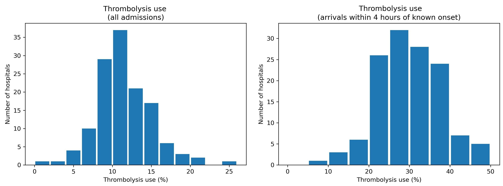{kind=link}
Machine learning#
All work was conducted in Python (v3.8). All code is available at: https://github.com/samuel-book/samuel_shap_paper_1
Our machine learning model used XGBoost (eXtreme Gradient Boosting, v1.5, Chen & Guestrin, 2016). We used default settings apart from learning rate was set at 0.5 (see section below on ‘Fine-tuning of model regularisation’.
Machine learning models were explained using SHAP (SHapley Additive exPlanations, v0.41, Lundberg & Lee, 2017).
Chen, T. & Guestrin, C., 2016. XGBoost: A Scalable Tree Boosting System. In Proceedings of the 22nd ACM SIGKDD International Conference on Knowledge Discovery and Data Mining. KDD ‘16. New York, NY, USA: ACM, pp. 785–794. Available at: http://doi.acm.org/10.1145/2939672.2939785.
Lundberg SM, Lee SI. A Unified Approach to Interpreting Model Predictions. In: Advances in Neural Information Processing Systems [Internet]. Curran Associates, Inc.; 2017 [cited 2022 Jun 17]. Available from: https://proceedings.neurips.cc/paper/2017/hash/8a20a8621978632d76c43dfd28b67767-Abstract.html
Feature selection#
25 features were selected by identifying one feature at a time that led to greatest improvement in Receiver Operating Characteristic (ROC) Area Under Curve (AUC). ROC AUC was measured using stratified 5-fold cross validation.
The best model with 1, 2, 5, 10, 25 & all features (60 features before one-hot encoding of fields) had ROC AUCs of 0.715, 0.792, 0.891, 0.919, 0.923 & 0.922. We selected 10 features for all subsequent work, which were:
Arrival-to-scan time: Time from arrival at hospital to scan (mins)
Infarction: Stroke type (1 = infarction, 0 = haemorrhage)
Stroke severity: Stroke severity (NIHSS) on arrival
Precise onset time: Onset time type (1 = precise, 0 = best estimate)
Prior disability level: Disability level (modified Rankin Scale) before stroke
Stroke team: Stroke team attended
Use of AF anticoagulants: Use of atrial fibrillation anticoagulant (1 = Yes, 0 = No)
Onset-to-arrival time: Time from onset of stroke to arrival at hospital (mins)
Onset during sleep: Did stroke occur in sleep?
Age: Age (as middle of 5 year age bands)
The improvement in ROC AUC with increasing features is shown in the figure below.

The effect of increasing the number of features on model accuracy measured by Receiver Operating Characteristic (ROC) Area Under Curve (AUC). Left: Improvement with ROC AUC with selection of up to 25 features. Right: Improvement with ROC AUC with selection of the best 10 features.
Correlations within the 10 features#
Correlations between the 10 features were measured using coefficients of determination (r-squared). All r-squared were less than 0.15, and all r-squared were less than 0.05 except 1) age and prior disability level (r-squared 0.146), and 2) onset during sleep and precise onset time (r-squared 0.078).
variable 1 |
Variable 2 |
r-squared |
|---|---|---|
Age |
Prior disability level |
0.1462 |
Onset during sleep |
Precise onset time |
0.0784 |
Stroke severity |
Prior disability level |
0.0454 |
Stroke severity |
Infarction |
0.0386 |
Precise onset time |
Onset-to-arrival time |
0.0344 |
Stroke severity |
Age |
0.0268 |
Age |
Use of AF anticoagulants |
0.0207 |
Stroke severity |
Onset-to-arrival time |
0.0186 |
Precise onset time |
Prior disability level |
0.0131 |
Age |
Precise onset time |
0.0090 |
Prior disability level |
Use of AF anticoagulants |
0.0070 |
Onset during sleep |
Onset-to-arrival time |
0.0043 |
Onset-to-arrival time |
Age |
0.0038 |
Use of AF anticoagulants |
Infarction |
0.0033 |
Prior disability level |
Onset-to-arrival time |
0.0022 |
Precise onset time |
Arrival-to-scan time |
0.0021 |
Use of AF anticoagulants |
Stroke severity |
0.0019 |
Arrival-to-scan time |
Stroke severity |
0.0019 |
Precise onset time |
Use of AF anticoagulants |
0.0016 |
Stroke severity |
Onset during sleep |
0.0011 |
Infarction |
Onset-to-arrival time |
0.0007 |
Infarction |
Onset during sleep |
0.0007 |
Infarction |
Precise onset time |
0.0006 |
Onset-to-arrival time |
Arrival-to-scan time |
0.0004 |
Arrival-to-scan time |
Prior disability level |
0.0001 |
Onset-to-arrival time |
Use of AF anticoagulants |
0.0001 |
Stroke severity |
Precise onset time |
0.0000 |
Arrival-to-scan time |
Age |
0.0000 |
Use of AF anticoagulants |
Onset during sleep |
0.0000 |
Prior disability level |
Onset during sleep |
0.0000 |
Infarction |
Age |
0.0000 |
Use of AF anticoagulants |
Arrival-to-scan time |
0.0000 |
Onset during sleep |
Arrival-to-scan time |
0.0000 |
Arrival-to-scan time |
Infarction |
0.0000 |
Age |
Onset during sleep |
0.0000 |
Prior disability level |
Infarction |
0.0000 |
Model accuracy#
Model accuracy was measured using stratified 5-fold cross validation. The key results are shown below.
measurement |
mean |
std |
|---|---|---|
actual positive rate |
0.296 |
0.000 |
actual negative rate |
0.704 |
0.000 |
predicted positive rate |
0.294 |
0.002 |
predicted negative rate |
0.706 |
0.002 |
accuracy |
0.850 |
0.004 |
sensitivity (recall) |
0.743 |
0.004 |
specificity |
0.894 |
0.004 |
precision |
0.747 |
0.007 |
ROC AUC |
0.918 |
0.003 |
Balanced sensitivity/specificity |
0.839 |
0.003 |
The figure below shows the receiver operating characteristic curve, along with the trade-off between sensitivity and specificity.
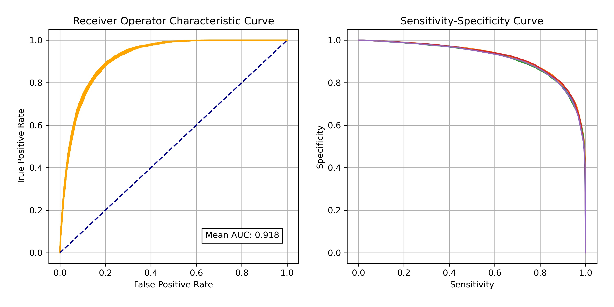{kind=link}
Validation of hospital thrombolysis use#
With k-fold validation, every instance is in one, but only one, test set. The test sets may therefore be combined to have predictions for the whole data set. Using these collated results we may compare predicted thrombolysis use at each hospital, compared with the actual (observed) thrombolysis use. There was very good agreement between predicted and observed thrombolysis use at each hospital (r-squared 0.977).
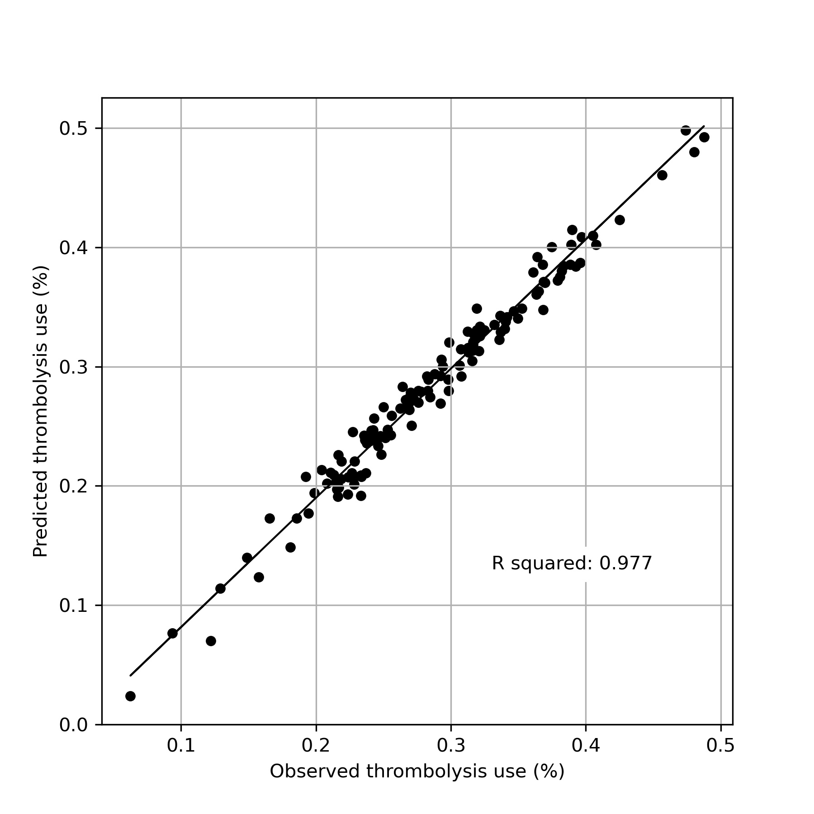{kind=link}
Model calibration#
The model calibration was checked by binning predictions by probability, and comparing the mean predicted probability with the fraction that were actually positive. This demonstrates that the model was naturally well-calibrated, and was not in need of any calibration correction.
bin |
predicted probability |
fraction positive |
fraction correct |
frequency |
|---|---|---|---|---|
0.1 |
0.018 |
0.023 |
0.977 |
0.480 |
0.2 |
0.146 |
0.174 |
0.826 |
0.082 |
0.3 |
0.248 |
0.271 |
0.729 |
0.056 |
0.4 |
0.348 |
0.371 |
0.629 |
0.045 |
0.5 |
0.450 |
0.443 |
0.557 |
0.043 |
0.6 |
0.551 |
0.546 |
0.546 |
0.042 |
0.7 |
0.652 |
0.643 |
0.643 |
0.049 |
0.8 |
0.753 |
0.736 |
0.736 |
0.065 |
0.9 |
0.852 |
0.827 |
0.827 |
0.089 |
1.0 |
0.932 |
0.893 |
0.893 |
0.049 |
{kind=link}
Evaluating variation in model predictions and predicted 10k cohort thrombolysis rate using bootstrap models#
Data was split into a training set of 78,928 patients, and a test set of 10k patients. 30 models were trained, each with a different bootstrap sample of the training set and with a different model random seed. For each of the 10k test set, we evaluated the variation in the predicted probability of receiving thrombolysis. The mean of these standard deviation was 0.057, but the variation depended on the probability, with variation peaking at about 0.13 when the prediction probability of receiving thrombolysis was around 0.5.
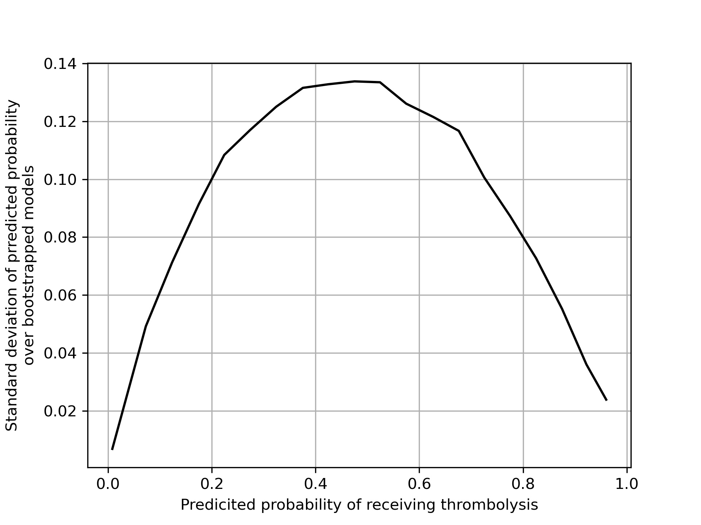{kind=link}
Additionally, we used the models and test set to predict thrombolysis at each of the 132 hospitals if the 10k cohort of patients had attended each of the hospitals (by changing the hospital one-hot encoding). We predicted the thrombolysis use at each hospital, and examined the variation between the 30 bootstrapped models. The mean of the standard deviation of bootstrap replicates was 1.7% (where hospital thrombolysis use rates were 10% to 45%).

Bagging experiments were repeated with Baysian Bootstrapping based on weighting training samples using a Dirichlet distribution. Very similar results were achieved, with a mean standard deviation of bootstrap replicate probability predictions of 0.054, and a mean standard deviation of bootstrap replicate 10k thrombolysis use in hospitals of 1.6%.
The evaluation of bootstrapped replicates gave us confidence that a single model fit would be sufficient.
Learning curves#
Learning curves were performed using stratified 5-fold validation, and by random sampling of the training set. The maximum accuracy achieved was 85% using 70k trainign points, 82.5% accuracy was achieved with 4k training points. There was a shallow improvement between 4k and 70k training points.
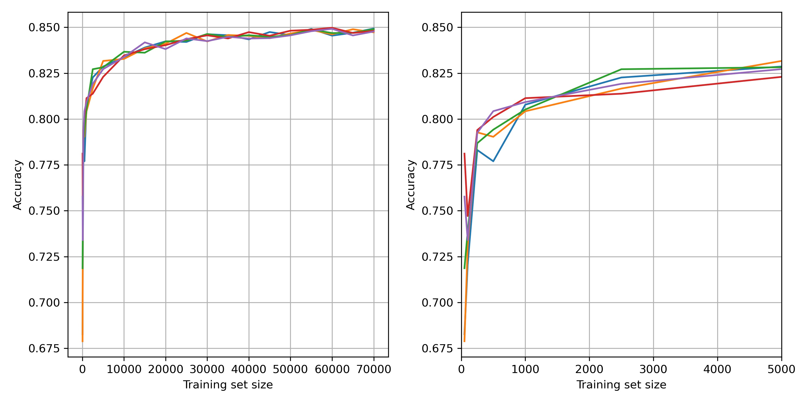{kind=link}
Fine-tuning of model regularisation#
As hospital ID is encoded as one-hot, and there are 132 hospitals, it is possible that the effect of hospitals ID becomes ‘regularised out’. Learning rate in XGBoost acts as a regulariser. The lower the learning rate the less weight new trees have, and so the model becomes more regularised (less likely to overfit).
As we are concerned with differences between hospitals, we did not want to over-regularise the model. To optimise learning rate we looked at the between-hospital variation of predicted thrombolysis use in a 10k cohort of patients (with the model predicting the use of thrombolysis in each hospital with the same 10k cohort). The mode was trained was on the remain 78,928 patients, with varying learning rates.
Reducing the learning rate below 0.5 led to reduced between-hospital variation in the predicted use of thrombolysis, suggesting that the effect of hospital ID was being reduced by over-regularisation.
A learning rate of 0.5 was chosen for all modelling (including the accuracy measurements above).
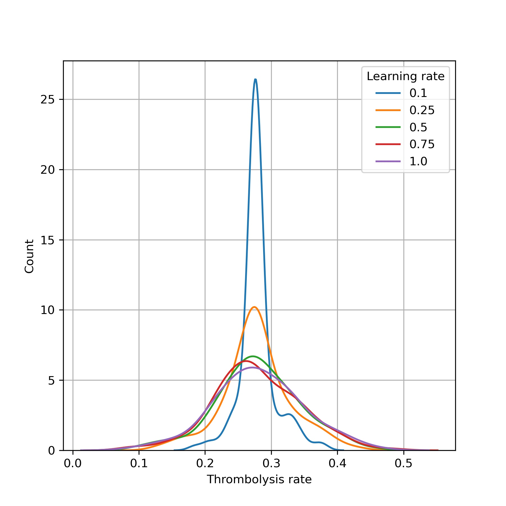{kind=link}
An analysis of the characteristics of the most thrombolysable patient at each hospital#
We identified the patient with the highest probability of thrombolysis at each hospital, and compared the feature values of those patients to:
All patients
All patients receiving thrombolysis
All patients not receiving thrombolysis
{kind=link}
Compared with the other groups, the most thrombolysable patients ….
Had shorter arrrival-to-scan times
Had an infarction stroke type
Had stroke servities with NIHR 5-25
Had a precise onset time
Had lower pre-stroke disability
Were not taking anticoagulant medication
Had shorter onset-to-arrival times
Do not have onset during sleep
Were younger
Explaining model predictions with SHAP#
SHAP values describe how much a feature affects the probability of receiving thrombolysis. These are usually expressed as log odds. Below is a brief introduction to probability, odds, log odds and SHAP values.
Probability, odds, and Shap values (log odds shifts): A brief explanation#
Many of us find it easiest to think of the chance of something occurring as a probability. For example, there might be a probability of 10% that it will rain today. That is the same as saying there will be one rainy day out of ten days for days with this given probability of rain.
In our stroke thrombolysis model, Shap values tell us how knowing something particular about a patient (such as the patient feature, ‘Is their stroke caused by a clot or a bleed?’) adjusts our prediction of whether they will receive thrombolysis or not.
This is made a little more complicated for us because Shap is usually reported as a log odds shift. It is useful for us to see how those relate to probabilities, and get a sense of how significant Shap values in the range of 0.5 to 5 (or -0.5 to -5) are, as that is a common range of Shap values that we will see in our models.
Probability#
We will take the example that Shap reports that a model’s base probability prediction, before the contribution of features is 0.25, or a 25% probability of receiving thrombolysis; that is 1 in 4 patients with this prediction would be expected to receive thrombolysis.
Odds#
Probability expresses the chance of something happening as the number of positive occurrences as a fraction of all occurrences (i.e. the number of patients receiving thrombolysis as a fraction of the total number of patients).
Odds express the chance of something happening as the ratio of the number of positive occurrences (i.e. receiving thrombolysis) to the number of negative occurrences (i.e. not receiving thrombolysis).
If we have probability prediction of 0.25 would receive thrombolysis, that would mean 1 in 4 of those patients receive thrombolysis. Expressed as odds, for every one patient that receives thrombolysis, three will not. The odds are expressed as 1:3 or 1/3. This may also be calculated as a decimal (1 divided by 3), 0.333.
Odds (O) and probability (P) may be converted with the following equations:
O = P / (1 - P)
P = O / (1 + O)
Shap values: Log odds shifts#
Here we will calculate the effect of Shap values, and try and build some intuition on the size of effect Shap values of 0.5 to 5 give (we will look at positive and negative Shap values).
Shap usually outputs the effect of a particular feature in how much it shifts the odds. For reasons we will not go into here, that shift (which is the ‘Shap value’) is usually given in ‘log odds’ (the logarithm of the odds value). For the mathematically inclined, we use the natural log (ln).
Let’s look at some Shap values (log odds) and see how much they change the odds of receiving thrombolysis.
First we’ll look at the shift in odds the Shap values give. This is calculated as shift = exp(Shap)
Shap (log odds) |
Shift in odds (multiply original odds) |
|---|---|
0.5 |
1.65 |
1 |
2.72 |
2 |
7.39 |
3 |
20.1 |
4 |
54.6 |
5 |
148 |
Positive Shap values: worked example
Now let us work through an example of starting with a known baseline probability (before we consider what we know about a particular patient feature), converting that to odds, applying a Shap log odds shift for that particular feature, and converting back to probability after we have applied the influence of that feature.
Here are the effects of those shifts on our baseline probability of 0.25.
Starting P |
Starting O |
SHAP |
Shift (multiply O) |
Shifted O |
Shifted P (%) |
|---|---|---|---|---|---|
0.25 (25%) |
0.333 |
0.5 |
1.65 |
0.55 |
0.3547 (35.5%) |
0.25 (25%) |
0.333 |
1 |
2.72 |
0.907 |
0.4754 (47.5%) |
0.25 (25%) |
0.333 |
2 |
7.39 |
2.46 |
0.7112 (71.1%) |
0.25 (25%) |
0.333 |
3 |
20.1 |
6.7 |
0.87 (87.0%) |
0.25 (25%) |
0.333 |
4 |
54.6 |
18.2 |
0.9479 (94.8%) |
0.25 (25%) |
0.333 |
5 |
148 |
49.5 |
0.9802 (98.0%) |
So, for example, a Shap value of 0.5 for one particular feature tells us that that particular feature in that patient shifts our expected probability of that patient receiving thrombolysis from 25% to 36%. A Shap value of 5 for the same feature would shift the probability of that patient receiving thrombolysis up to 98%.
Negative Shap values: worked example
If we have a negative Shap value then odds are reduced (a Shap of -1 will lead to the odds being divided by 2.72, which is the same as multiplying by 1/2.72, which is 0.3679):
Starting P |
Starting O |
SHAP |
Shift (multiply O) |
Shifted O |
Shifted P (%) |
|---|---|---|---|---|---|
0.25 (25%) |
0.333 |
-0.5 |
1.65 |
0.55 |
0.1682 (16.8%) |
0.25 (25%) |
0.333 |
-1 |
2.72 |
0.907 |
0.1092 (10.9%) |
0.25 (25%) |
0.333 |
-2 |
7.39 |
2.46 |
0.0432 (4.32%) |
0.25 (25%) |
0.333 |
-3 |
20.1 |
6.7 |
0.0163 (1.63%) |
0.25 (25%) |
0.333 |
-4 |
54.6 |
18.2 |
0.0061 (0.61%) |
0.25 (25%) |
0.333 |
-5 |
148 |
49.5 |
0.0022 (0.22%) |
So, for example, a Shap value of -0.5 for one particular feature tells us that that particular feature in that patient shifts our expected probability of that patient receiving thrombolysis from 25% to 17%. A Shap value of 5 for the same feature would shift the probability of that patient receiving thrombolysis down to 2%.
Observations about Shap values#
We begin to get some intuition on Shap values. A Shap value of 0.5 (or -0.5) leads to a small, but still noticeable, change in probability. Shap values of 5 or -5 have effectively pushed probabilities to one extreme or the other.
Consistency of SHAP values across 5-fold validation#
The figure below shows the variation in mean absolute SHAP values obtained from the training sets of the 5 models in k-fold validation. SHAP values are well maintained across the five models.

This result gave us confidence to use a single train/split to further investigate what SHAP reveals about the model.
We also see the order of general influence of features across the population (note: teams are separated out into individual features, and need a separate analysis to examine SHAP of only those patients attending a particular hospital, as otherwise the SHAP is dominated by all the ‘0’ one-hot encoded feature values):
Infarction
Arrival-to-scan time
Stroke severity
Precise onset time
Prior disability level
Use of AF anticoagulants
Onset-to-arrival time
Age
Onset during sleep
Beeswarm plot of SHAP values#
The beeswarm plot gives a high level view of the feature values and SHAP values across the whole data set. We can see, for example that if a patient has an infarction then SHAP values are in the range 1-2, but if the patient does not have an infarction (i.e. has a haemorrhage) then SHAP values are in the range -8 to -4, effectively preventing the model from ever predicting thrombolysis would be given to a haemorrhagic patient.
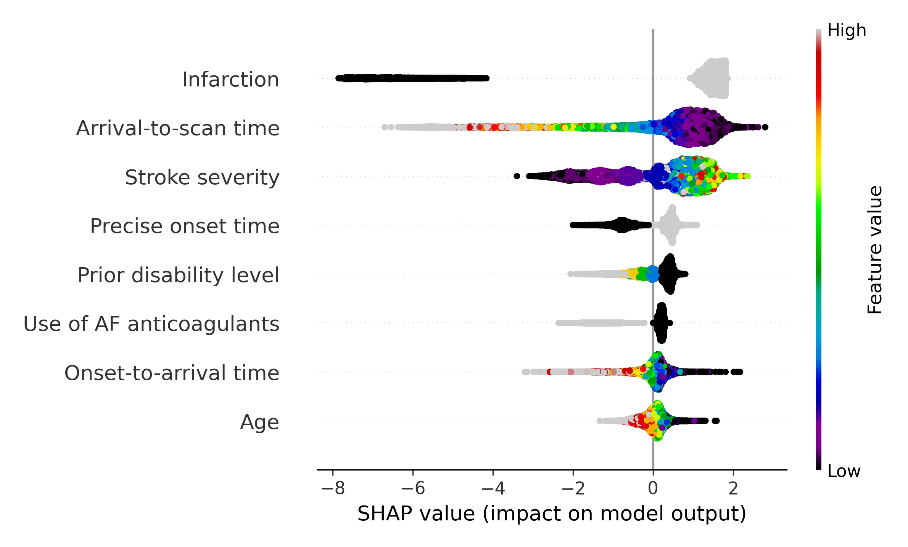{kind=link}
Violin plots of SHAP values#
Violin plots show the relationship between feature values and SHAP values for individual patients (the bar in each violin shows the median value). Key observations are:
Stroke type: As expected, the SHAP values for stroke types effectively eliminated any chance of receiving thrombolysis for non-ischaemic (haemorrhagic) stroke.
Arrival-to-scan time: The odds of receiving thrombolysis reduced by about 20 fold over the first 100 minutes of arrival to scan time.
Stroke severity (NIHSS): The odds of receiving thrombolysis was lowest at NIHSS 0, rose and peakws at NIHSS 15-25, and then fell again with higher stroke severity. The difference between minimum odds (at NIHSS 0) and maximum odds (at 15-25) of receiving thrombolysis was 30-35 fold.
Stroke onset time type (precise vs. estimated): The odds of receiving thrombolysis were about 3 fold greater for precise onset time than estimated onset time.
Disability level (Rankin) before stroke. The odds of receiving thrombolysis fell about 5 fold between mRS 0 and 5.
{kind=link}
Hospital SHAP values#
When examining SHAP, we take the hospital SHAP values for patients attending each hospital (if we examined the hospital SHAP for all patients, it would be dominated by those not-attending each hospital (i.e. coded zero in the one-hot encoding). When we examine the hospital SHAP values for a model trained on all the data, and only for patients attending each hospital, the hospital SHAP values ranged from -1.4 to +1.4. This range of SHAP (log odds) represents a 15 fold difference in odds of receiving thrombolysis (most are in the range of -1 to +1, but this still represents a 7-8 fold difference in odds of receiving thrombolysis).
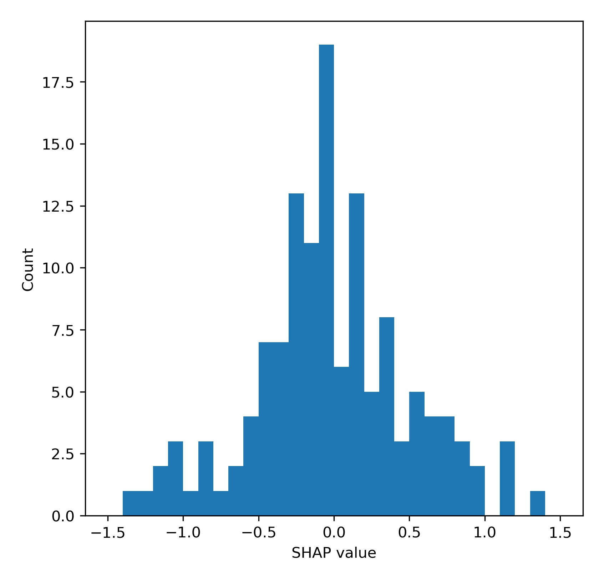{kind=link}
We compared the hospital SHAP value with the observed thrombolysis use at each hospital. Hospital SHAP correlated with observed thrombolysis rate with an r-squared of 0.582 (P<0.0001) , suggesting that 58% of the between-hospital variance in thrombolysis use may be explained by the hospitals’ SHAP values, that is the hospitals’ predisposition to use thrombolysis.
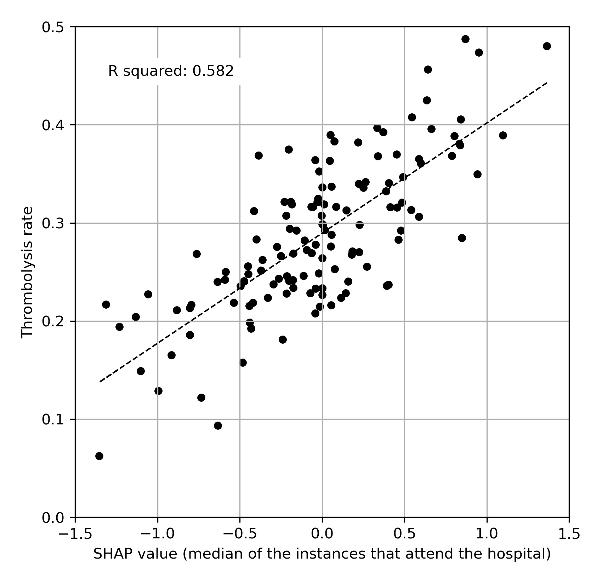{kind=link}
The hospital SHAP value is composed of a main effect of the hospital, independent of other patient features, and interaction effects, which is how the hospital ID interacts with other patient features (e.g. if a hospital treats a certain type of patient in a way that is different to the usual pattern). We found that the SHAP value (which is the sum of the main effect and the interaction effects) for hospitals had a broader range than the main effect, as this value included how a hospital may have different predispositions to use thrombolysis in different types of patient.

When we re-axamine the correlation between hospital SHAP and observed thrombolysis rate, we find that the main hospital SHAP effect accounts for 56% of the variance in thrombolysis rate (c.f. 58% for the full SHAP).

Hospital SHAP and 10k cohort#
When using the 10k cohort, changing the one-hot encoding to mimic all patients attending each of the 132 hospitals, we found that the median hospital SHAP value for the 10k patients correlated very closely with the predicted thrombolysis use in the 10k cohort at each hospital (r-squared = 0.947 for full SHAP and r-squared = 0.944 for the main effect), confirming that the hospital SHAP is providing a key insight into a hopsital’s predisposition to use thrombolysis.
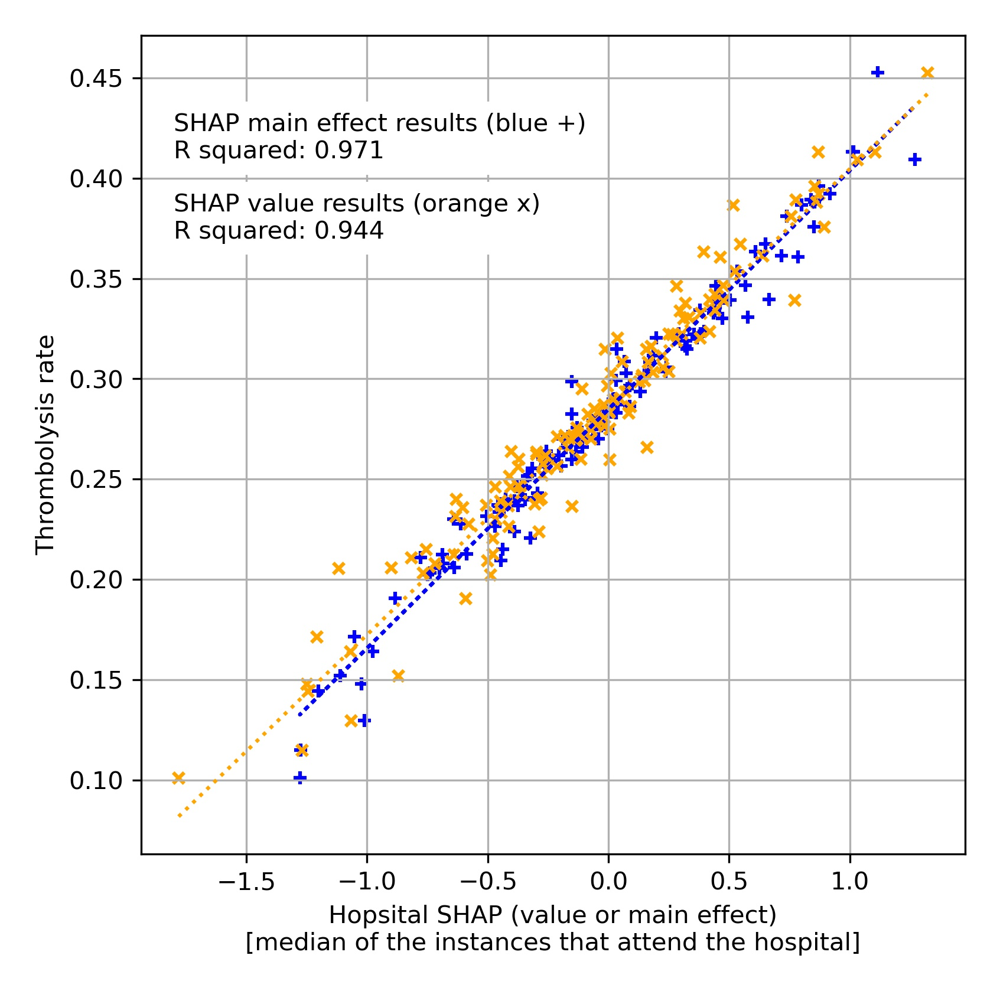{kind=link}
Though we model the same 10k patients going to all hospitals, we found that the SHAP interaction effect (the difference between the full SAHP value and the SHAP main effect) differed between hospitals. This demonstrated how the hospital SHAP is partly dependent on the patients attending (and the hospital’s predisposition to give thrombolysis to different groups of patients).
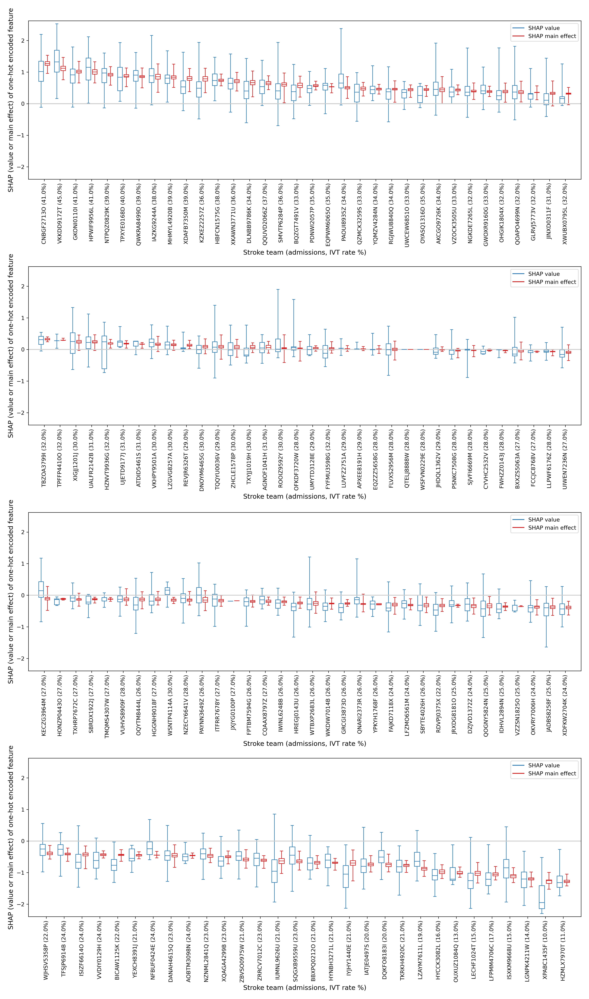{kind=link}
Waterfall plots for individual patient predictions#
Waterfall plots show the influence of features for an individual prediction. We generally handle SHAP values as how they affect log odds of receiving thrombolysis, but for individual predictions, probability plots are more intuitive. The example shown below is for a patient with a low probability of receiving thrombolysis. The model starts with a base prediction of a 24% probability of receiving thrombolysis, before feature values are taken into account. Some features increase that base probability of receiving thrombolysis, those are onet-to-arrival time, having a precise onset time, having no prior disability, and being young. Three features then reduce the probability of receiving thrombolysis: the hospital they attended, the long arrival-to-scan time, and having a mild stroke, with a resulting final probability of receiving thrombolysis of 3%.
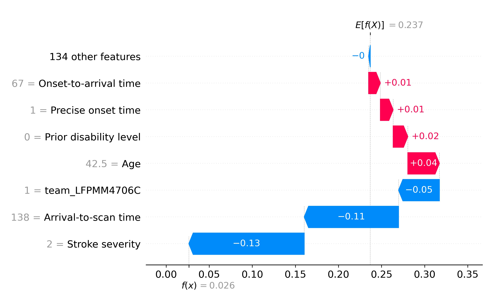{kind=link}
We may see a similar plot for a patient with a high (96%) probability of receiving thrombolysis.
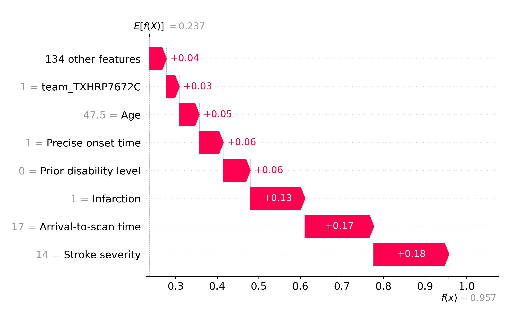{kind=link}
Hospital SHAP interactions#
Below are three examples of how a particular hospital modifies the general SHAP effects - either strengthening the effect, of attenuating it.
Hospital and onset time interaction#
The main effect of the precise onset time is that if onset time is known precisely then SHAP (log odds) is increased by 0.42, otherwise it is reduced by 0.85.
Team_HZNVT9936G has a slightly higher main effect for hopsital SHAP (0.26) than Team_FAJKD7118X -0.27). Team_HZNVT9936G also has interactions that strengthen the effect of precise onset time whereas Team_FAJKD7118X has interactions values that attenuate the main effect of precise onset time.

Hospital and stroke severity interaction#
The main effect of stroke severity is to significantly reduce the odds of receiving thrombolysis for mild strokes (NIHSS 0-5), increase the odds of receiving thrombolysis for more moderate to sever strokes (NIHSS 6-32), and then reduce the odds of receiving thrombolysis for very severe stroke strokes (NIHSS 33+).
Team_TPXYE0168D has a higher general tendency to use thrombolysis than Team_SMVTP6284P (team main effect SHAP = 0.92 vs 0.62)
Team_TPXYE0168D has a SHAP interaction that opposes the general stroke severity main effect, especially increasing the odds of receiving thrombolysis for mild strokes. Team_SMVTP6284P strengthens the main effect of stroke severity - reducing the odds of receiving thrombolysis even further for mild strokes.

Hospital and stroke severity interaction#
The main effect of prior disability is to progressively reduce the odds of receiving thrombolysis with increasing disability (a SHAP of +0.3 for mrS=0 down to -1.50 for mRS=5).
Team_XKAWN3771U has a slighty higher general tendency to use thrombolysis than Team_AKCGO9726K (team main effect SHAP = 0.78 vs 0.45). Team_XKAWN3771U has a SHAP interaction that opposes the general prior disability main effect. Team_AKCGO9726K strengthens the main effect of pre-stroke disability - reducing the odds of receiving thrombolysis even further for mild strokes.

General SHAP interactions#
All features may interact with each other, and SHAP captures all these 2-way interactions. We found that the feature main effects (without interactions) accounted for 62% of the total SHAP values, and 38% of the total SHAP values cam from interactions. The figure below shows interactions between all features, excluding the one-hot encoded hospitals.
Some key interactions are:
If a stroke is haemorrhagic, then the interaction is such that the presence of haemorrhage cancels out much of the other SHAP effects (i.e. stroke severity does not matter if the stroke is haemorrhagic).
Likewise elsewhere we find that features that each give negative SHAP values alone have an interaction that attenuates the combined effect of the two features together a little.

Subgroup analysis#
We analyse the observed and predicted use of thrombolysis in subgroups of patients.Those groups are:
Mild stroke severity (NIHSS < 5)
No precise onset time
Existing pre-stroke disability (mRS > 2)
An ‘ideal’ thrombolysable patient:
Stroke severity NIHSS in range 10-25
Arrival-to-scan time < 30 minutes
Stroke type = infarction
Precise onset time = True
Prior diability level (mRS) = 0
No use of AF anticoagulants
Onset-to-arrival time < 90 minutes
Age < 80 years
Onset during sleep = False
The figure below shows a boxplot of either observed (top) or predicted (bottom) use of thrombolysis.
The observed and predicted subgroup analysis show very similar general patterns (with r-squared=0.95, see figure below of comparison of predicted and observed use of thrombolysis at each hospital for all subgroups). The three subgroups of NIHSS <5, no precise stroke onset time, and prestroke mRS > 2, all had reduced thrombolysis use, and combining these non-ideal features reduced thrombolysis use further.
Some differences exist:
The use of thrombolysi in ideal patients is a little low in the observed vs actual results (mean hopsital thrombolysis use = 89% vs 99%).
The predicted results show a stronger effect of combining non-ideal features.
The observed thrombolysis rate shows higher between-hopsital variation than the predicted thrombolysis rate. This may be partly explained by the observed thrombolsysi rate being on different patients at each hospital, but may also be partly exlained by actual use of thrombolysis being slightly more variable than predicted thrombolysis use (which will follow general hospial patterns, and will not include, for example, between-clinician variation at each hospital).

The correlation of predicted and observed use of thrombolysis at each hospital for all subgroups:
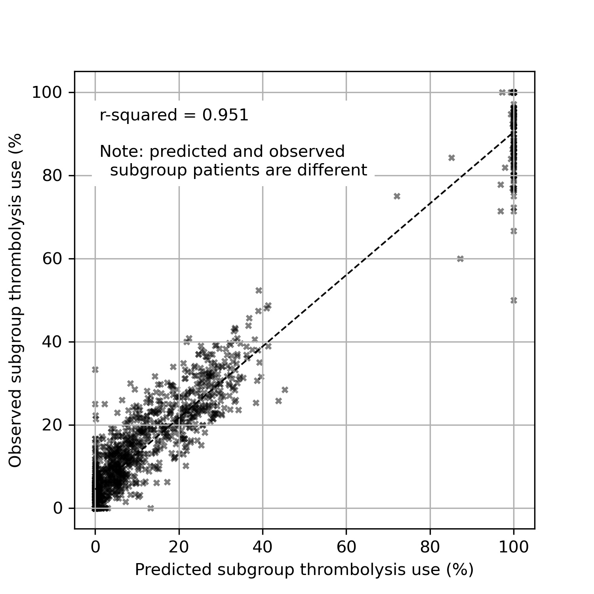{kind=link}
When we look at thrombolysis use in subgroups at each hospital we see that the observed thrombolysis use tended to reduce in parallel, along with total thrombolysis use, suggesting a shared caution in use of thrombolysis in ‘less ideal’ patients.
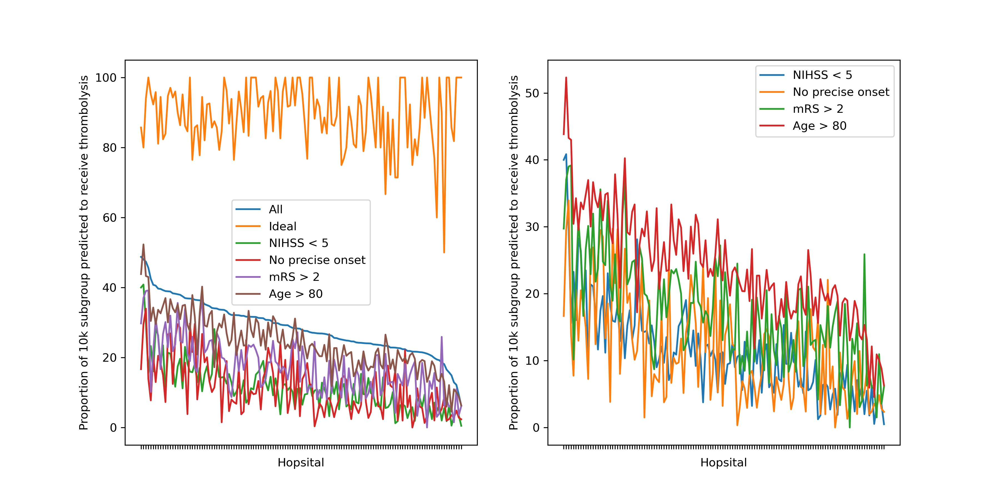{kind=link}
This parallel reduction in use of thrombolysis across the subgroups was also seen in the predicted use of thrombolysis.

A comparison of thrombolysis use in high and low thrombolysing units by feature values#
This experiment plots the relationships between feature values and thrombolysis use for low and high thrombolysing hospitals. The high and low thrombolysing hopsitals are taken as the top and bottom 30 hospitals as ranked by the predicted thrombolysis use in the same 10k cohort of patients. We find that thrombolysis use in low thrombolysing hospitals follows the same general relationship with feature values as the high thrombolysing hospitals, but thrombolysis is consistently lower.

Artificial patients#
We use artificial patients to investigate controlled changes to patients, and see how many hospitals are predicted to give thrombolysis.
We start with a ‘base patient’ who has features that are favourable to use of thrombolysis:
Onset to arrival = 80 mins
Arrival to scan = 20 mins
Infarction = 1
NIHSS = 15
Prior disability level = 0
Precise onset time = 1
Use of AF anticoagulents = 0
We then vary the following features in turn, keeping all other features the same as the base patient:
NIHSS = 0-40
Prior disability level = 0-5
Precise onset time = 0-1
The number of hospitals giving thrombolysis:
Base patient: 132 (99%)
Base patient, but NIHSS = 5: 123 (93%)
Base patient, but pre-stroke disability = 2: 125 (95%)
Base patient, but estimated stroke onset time: 109 (83%)
Combining two marginal features:
Base patient, but NIHSS = 5 and pre-stroke disability = 2: 78 (59%)
Base patient, but NIHSS = 5 and estimated stroke onset time: 30 (23%)
Base patient, but pre-stroke disability = 2 and estimated stroke onset time: 26 (20%)
Combining three marginal features:
Base patient, but NIHSS = 5, pre-stroke disability = 2, estimated stroke onset time: 2 (1.5%)
Starting with the ideal patient, and changing only feature at a time we observed the following changes in the proportion of thrombolysis that were predicted to give the patient thrombolysis:
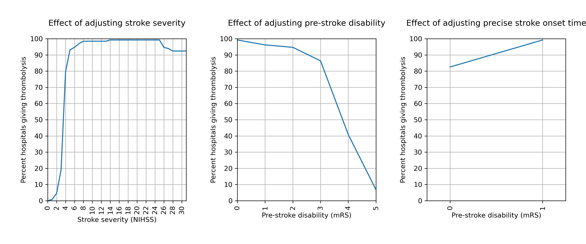{kind=link}
We also studied combining changes to the patient (starting with the ‘ideal’ thrombolysable patient. The chart below shows the proportion of hospitals predicted to give a patient thrombolysis by altering stroke severity in combination with estimated (non-precise) onset time, mild pre-existing disability (mRS 2), or a combination of estimated onset time and mild pre-existing disability.
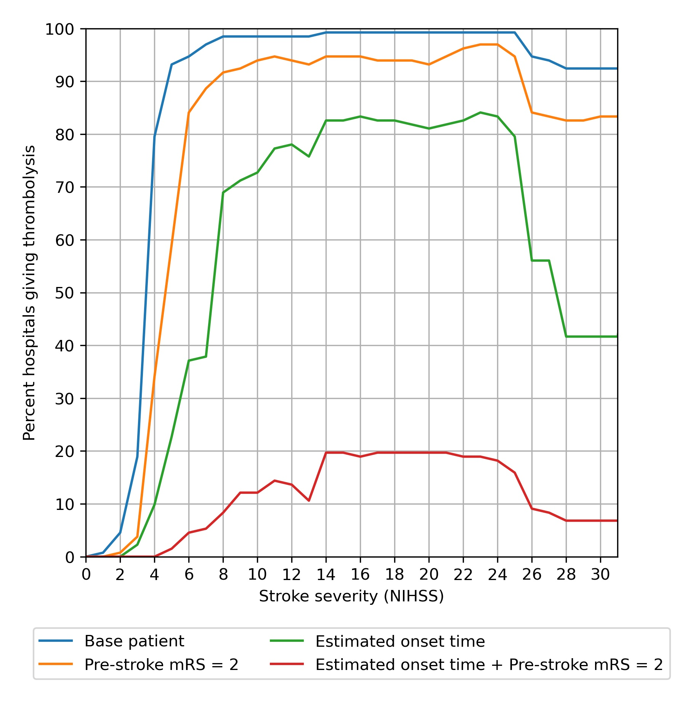{kind=link}
10k cohort and ‘benchmark’ decisions#
In this experiment we predict, for each hospital, the expected use of thrombolysis for a 10k cohort of patients (the model is trained on the remaining 78,792 patients.
The 30 hospitals with the highest predicted thrombolysis use in the 10k cohort were considered benchmark hospitals.
We then took each hospitals own patients and predicted the thrombolysis decision that would made for each patient at each of the hospitals, taking a majority vote of those benchmark hospitals as the benchmark decision for that patient. We estimated the use of thrombolysis at each hospital if the benchmark decision was followed for all patients attending each hospital.

83.3% decisions are identical between local and benchmark decisions.
Thrombolysis use would be increased 31.2% at non-benchmark hospitals if benchmark decisions were made at those hospitals. Overall, thrombolysis use, including at the benchmark hospitals, would be increased 20.7%. Thrombolysis at the 30 lowest thrombolysing units (judged by expected 10k thrombolysus rate) would be increased 60.2%.
The ratio of benchmark:local thrombolysis use ranged from 0.7 to 2.1.